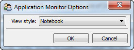

The application monitor tool displays views of all application objects associated with its containing tool window or any other DockWindow specified by its input Control object.
An application object refers to a HasFacets object whose contents are displayed in a DockWindow DockControl. The tool extracts and displays the application objects for each DockControl contained in a particular DockWindow.
The tool displays each application object as a hierarchical tree view, with each node representing an object facet value. Using the tool’s options dialog, available through the tool’s feature toolbar, you can specify whether each application object should be displayed in its own tab or organized into a single tree with all of the application objects at the top level.
When each application object is displayed in its own tab, you can close unneeded tabs by clicking the tab’s close icon. You can also click the tool’s refresh icon on its feature toolbar to update the list of application objects being displayed.
By default, the application monitor shows all of the application objects in its own window. You can display the application objects for another window by connecting another tool (e.g. the ControlGrabber) to the tool’s control facet. When it receives a new control as input, it searchs the control and its parent controls for a containing DockWindow, and then determines the set of application objects associated with the DockControls contained in the DockWindow.
facets.extra.tools.app_monitor
None.
In addition to its input connections, the application monitor tool also supports setting the following facets through the tool’s options dialog available via the tool’s feature toolbar:
Specifies how the tool should display its application objects:
Shows the application monitor tool displaying the application objects for its own tool window.
A view of the options dialog for the application monitor tool.